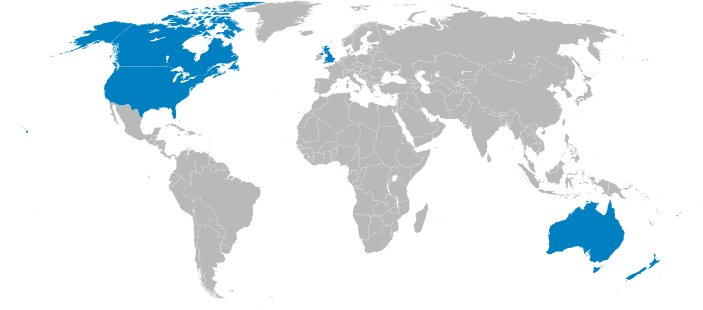
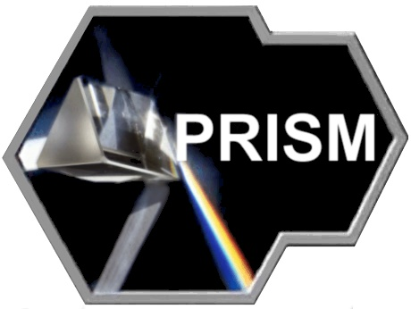
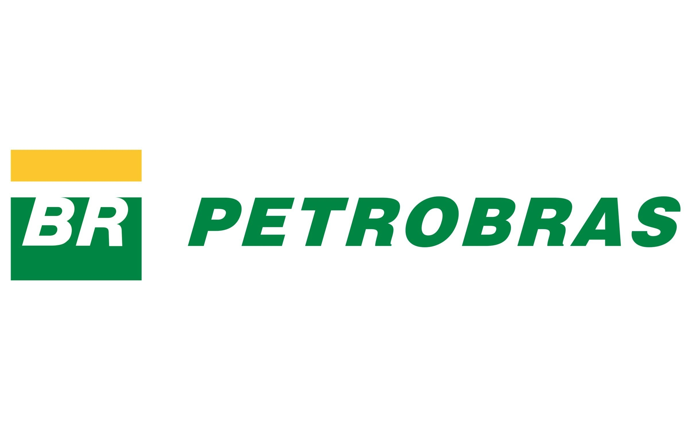
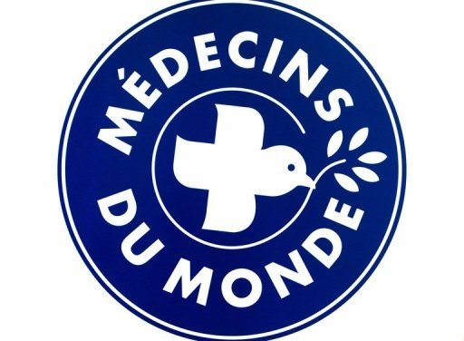

l'ordonnance de la Foreign Intelligence Surveillance Court (FISC) imposant à Verizon la transmission des métadonnées
téléphoniques quotidiennes des millions d’américains au FBI et à la NSA.
D'autres importantes divulgations

un appareil de surveillance global en collaboration de trois de ses quatres partenaires de Five Eyes

PRISM: programme permettant l'accès direct aux comptes Google et Yahoo
MAINWAY: base de donnée contenant les centaines de milliards d'appels téléphoniques par
les quatre plus grandes opérateurs téléphoniques des É.-U.

collecte de renseignement au géant pétrolier Petrobras, la plus grande entreprise de Brésil

surveillance des charité comme UNICEF et Médecins du monde,
ainsi que des alliés comme un commission européen et le premier ministre israélien
ETC.
En résumé
NSA récolte les renseignements provenant hors des É.U.
NSA surveille le peuple américain en ciblant les communications
Les agences des autres pays les font également
Question éthique
Est-ce souhaitable qu’on mette plus d’importance à la sécurité de la société qu’à la vie privée? Ou bien le contraire?